slopes on surfaces
Here, at the beginnings of our exploration of higher-dimensional calculus, we’ve figured out a few things. We’ve figured out that, unlike in single-variable calculus, slopes in higher dimensions are dependent not just on the functions themselves, but also on the direction we’re facing. In particular, if we’re on some \(n\)-dimensional surface (or scalar function, as most people call it), then the slope is just the dot product of the vector of partial derivatives (the gradient vector, or the derivative vector, or whatever you want to call it) with the direction/unit vector of the direction we’re facing: \[\begin{align*} \substack{\text{the slope}\\\text{in some direction}\\\text{at some point}} \quad &= \left(\text{gradient/derivative vector}\right) \cdot \left(\text{unit/direction vector}\right) \\ \\ &= \begin{bmatrix}\frac{\partial f}{\partial x_1} \\ \frac{\partial f}{\partial x_2} \\ \frac{\partial f}{\partial x_3} \\ \vdots \end{bmatrix} \cdot \begin{bmatrix} \substack{\text{the unit/direction vector}\\\text{in the $x_1$-direction}} \\ \substack{\text{the unit/direction vector}\\\text{in the $x_2$-direction}} \\ \substack{\text{the unit/direction vector}\\\text{in the $x_3$-direction}} \\ \vdots \end{bmatrix} \\ \\ &= \frac{\partial f}{\partial x_1}\left( \substack{\text{the unit/direction vector}\\\text{in the $x_1$-direction}} \right) \,+\, \frac{\partial f}{\partial x_2}\left( \substack{\text{the unit/direction vector}\\\text{in the $x_2$-direction}} \right) \,+\, \cdots \end{align*}\] This is nice because it’s a formula that generalizes to any number of dimensions! (It also magically encompasses our knowledge of single-variable slopes: in that case, there’s only one “partial” derivative, and only two choices for what the direction vector can be, \(\langle +1\rangle\) or \(\langle -1\rangle\).)
NOTES ON 2D SRUFACE DERIVATIVES ETC ETC ETC
From 1VC to MVC back down to 2VC
in 2VC-world things are a little simpler than the more general MVC-world. For one thing, we can draw pictures. A two-dimensional surface needs two inputs and one output; three dimensions, total; that’s something we can easily visualize! If we have a surface/scalar function that takes three inputs (and gives one output), or four inputs, or \(n\) inputs, pictures get much trickier.
Plus, in 2VC, we can easily think of direction vectors as just a friendly sine-and-cosine pair. In \(n\) dimensions, a direction vector is a vector whose components all Pythagorean-add1 to \(1\). In two dimensions, that works out to just being \(\cos\theta\) for the \(x\) and \(\sin\theta\) for the \(y\), if we want to use an angle \(\theta\) in the usual way on the \(xy\)-plane.
In this way two-dimensional surfaces make a great metaphor for \(n\)-dimensional surfaces: they have complexity that one-dimensional surfaces don’t have, but they’re still easy to visualize, and they’re possible to deal with “manually” (using marginally-more-annoying trig rather than the full fancy formalism of our higher-dimensional tools). So we can use them as an environment in which to get comfortable with higher-dimensional differentiation. Slopes in 2D are both interesting in and of themselves (after all, we simians live on a 2D surface), but also a great
the ritual sacrifice
We started our investigation of slopes in higher dimensions by doing what Kelly Poon ’24 called a “ritual sacrifice.” We marched outside, found a piece of plywood propped up on the wall outside the i-Lab, and made Jaxon Jacobs ’24 stand on it. Standing on the plywood, in the center, facing the wall, it’s pretty steep!!!
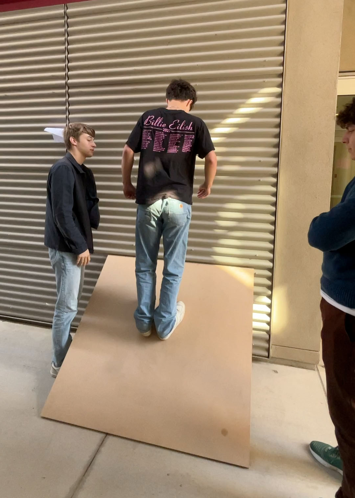
But… when Jaxon turned \(90\) degrees, the plywood—at least, in the direction he was facing, thinking of himself as walking on a one-dimensional path on this two-dimensional surface—the slope of the plywood became flat!!! He was facing a contour!
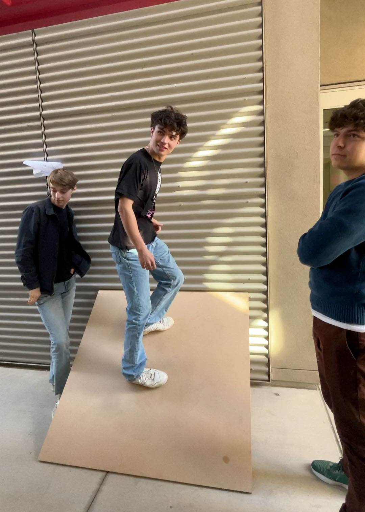
Then Jaxon turned another \(90\) degrees. Now it’s steep again, but it’s steep down!!!
Another \(90\) degrees. Now it’s back to being flat!!!
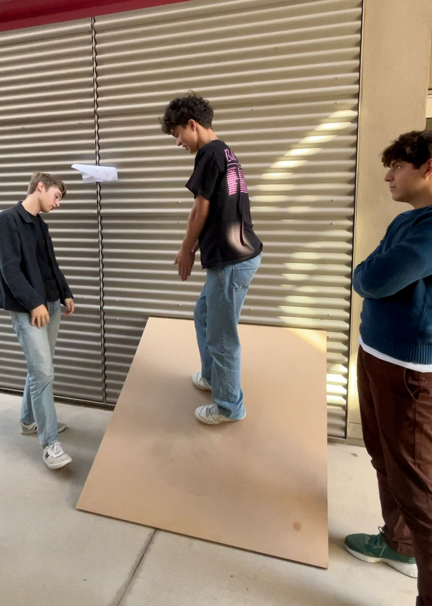
What’s the lesson here? As Aria Gao ‘24 put it in the auto-caption, ``The steepness is relative to what direction you’re facing!’’
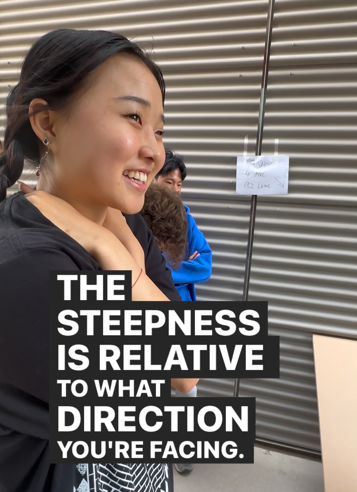
So that motivated our broader
In 1VC, the core idea/paradox/contention/assertion at the heart of calculus is this: \[\text{if we zoom in really far, everything becomes a straight {\color{red}line} }\] The \(n\)-dimensional analogue of this, in \(n\)-dimensional calculus, is: \[\text{if we zoom in really far, everything becomes a straight {\color{red}$\,\substack{\text{$n$-dimensional}\\\text{hypersurface}}$}}\] That’s weird. The two-dimensional/2VC case is easier to imagine: \[\text{if we zoom in really far, everything becomes a straight {\color{red} plane}}\] In 2VC, we zoom in really far, and everything becomes a—not a straight line, but a straight plane. “Straight” might not be the best word here; I don’t mean “straight” in the “flat” or “parallel to the ground” sense; I mean “straight” in the “not curvy” sense. (Or you can just say linear if you want to sound fancy)
That has ramifications!!! In 1VC, if we want to understand curvy lines, that means that we need to understand straight lines. Every straight line is just::
- a slope
- an offset (or a ``\(y\)-intercept,’’ as we might call it)
In other words, every straight line is just: \[y = \text{(slope)}x + \text{(offset)}\]
In 2VC, every straight plane is just:
- a slope in the \(x\)-direction
- a slope in the \(y\)-direction
- an offset (or a ``\(z\)-intercept,’’ you might call it) \[z = \left(\substack{\text{slope in the}\\\text{$x$-direction}}\right)x + \left(\substack{\text{slope in the}\\\text{$y$-direction}}\right)y +\text{(offset)}\]
Suppose we have a flat plane in 3D space:
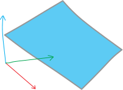
And we’re standing at some point on it: Then there’s a direction we can turn to make our perspective the steepest (i.e., the most-uphill direction):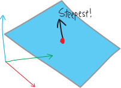
There’s also a direction we can turn to point in the steepest DOWNHILL direction: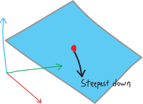
That direction is also 180 away from steepest uphill!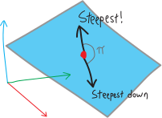
Meanwhile, there’s also a direction we can turn in that will be FLAT!: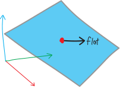
Actually, there are TWO such directions! (It’s a contour line, not a contour ray!)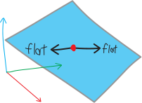
And both of those flat directions are halfway (90 degrees) between the two steepest directions: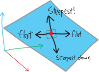
So that’s how the steepness-geometry of flat planes works.kayla lin: “this is such an iconic pod! it’s like the avengers in here”
Suppose we have some function:
Here’s one of the key steps: now we can think of the slope of \(f\), at the point \((x,y)\), in the direction of \(\theta\), as being a function of \(\theta\): \[\substack{\text{slope of $f$}\\\text{at $(x,y)$}\\\text{in the direction of $\theta$}}(\theta) = \frac{\partial f}{\partial x}\cos\theta + \frac{\partial f}{\partial y}\sin\theta\]
TKTKTKKTT
We’ve figured out that if we’re on a surface/scalar function—meaning a function that takes in some number of inputs and returns only one output—and we’re facing in some direction, then to find the slope (``directional derivative’’), we can just dot-product the derivative vector with the unit/direction vector: \[\substack{\text{the slope}\\\text{in some direction}\\\text{at some point}} = (\text{the gradient/derivative vector})\cdot (\text{the direction vector})\] If we’re in a 2D situation, it gets slightly simpler. The gradient/derivative vector just consists of the two partial derivatives (the one in the \(x\) and the one in the \(y\)): \[\substack{\text{the slope}\\\text{in some direction}\\\text{at some point}} = \begin{bmatrix}\frac{\partial f}{\partial x} \\ \\ \frac{\partial f}{\partial y} \end{bmatrix} \cdot (\text{the direction vector})\] Likewise, in 2D, it’s easier to talk about the direction. In addition to representing it as a unit/direction vector, we can also represent it as just a single number, an angle: \[\substack{\text{a direction in $\mathbb{R}^2$}\\\text{as an angle}} : \theta\] And any direction/unit vector we can write as just a cosine/sine pair of that angle: \[\substack{\text{a direction in $\mathbb{R}^2$}\\\text{as a unit vector}} : \left\langle \cos\theta, \sin\theta \right\rangle\] So the slope on a 2D surface, when you’re facing the direction \(\theta\), will be: \[\begin{align*} \substack{\text{the slope}\\\text{in some direction}\\\text{at some point}} &= \left(\text{gradient/derivative vector}\right) \cdot \left(\text{unit/direction vector}\right) \\ \\ &= \begin{bmatrix}\frac{\partial f}{\partial x} \\ \frac{\partial f}{\partial y} \end{bmatrix} \cdot \begin{bmatrix} \substack{\text{the unit/direction vector}\\\text{in the $x$-direction}} \\ \substack{\text{the unit/direction vector}\\\text{in the $y$-direction}} \end{bmatrix} \\ \\ &= \begin{bmatrix} \frac{\partial f}{\partial x} \\ \frac{\partial f}{\partial y}\end{bmatrix} \cdot \begin{bmatrix} \cos\theta \\ \sin\theta \end{bmatrix} \\ \\ &= \frac{\partial f}{\partial x}\cos\theta \,\,+\,\, \frac{\partial f}{\partial y}\sin\theta \end{align*}\] The two partial derivatives are just constants, note: \[ \underbrace{\frac{\partial f}{\partial x}}_{\mathclap{\substack{\text{just some}\\\text{number}}}}\cos\theta \quad+\quad \underbrace{\frac{\partial f}{\partial y}}_{\mathclap{\substack{\text{just some}\\\text{number}}}}\sin\theta\] Once we plug in the specific values for \(x\) and \(y\), i.e. the specific values of the partials at that point, then the partials are just numbers. It’s like we basically have: \[\text{slope} = a\cos\theta + b\sin\theta\] Or, with more detail: \[\text{slope}(\theta) = \frac{\partial f}{\partial x}\cos\theta + \frac{\partial f}{\partial y}\sin\theta\] So we have just a simple equation, which is a function of only one variable, \(\theta\)!!! That means that if we want, we can do all of our one-dimensional algebra and calculus on that function! We can even draw it!! It’ll look like: Exactly where the intercepts and extrema are will depend on the values of \(\frac{\partial f}{\partial x}\) and \(\frac{\partial f}{\partial x}\). But basically it looks just like this! Just like a standard trig function! It’s just a cosine and a sine, with different coefficients (but the same angles), added together! Any sum of a cosine and sine will look like this!
So, what we’re looking at is the angle you’re facing on the horizontal axis, and the resulting slope in the direction you’re facing on the vertical axis. So, for example, there’s a place where this graph has a maximum—and that corresponds to the direction on the original surface in which the surface is steepest! Likewise, this graph has a minimum—which corresponds to the direction on the original surface in which the surface is steepest downwards: And the graph has two places where it’s zero (at least between zero and \(2\pi\)), which correspond to the two directions you can turn in on the surface to make it flat (the contour directions):
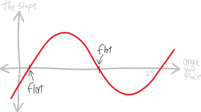
So, where do all these things actually happen?? For example, these two places where the original surface is flat (and the graph is zero). Can we compute what angle makes that happen?(Note that the slope-graph ITSELF isn’t flat at those points—in other words, the slope of the slope isn’t zero. This is a graph whose output is the slope of the original surface.)
If we want to calculate the angle we have to turn at to make the surface flat, then that’s the same as just finding what angle makes the slope \(0\), so we need to find the \(\theta\) that makes this slope-function zero: \[\text{slope}\left(\theta_\text{flat}\right) = 0\] I.e.: \[\frac{\partial f}{\partial x}\cos\theta_\text{flat} + \frac{\partial f}{\partial y}\sin\theta_\text{flat}= 0 \] So, if we move around the sine: \[ - \frac{\partial f}{\partial y}\sin\theta_\text{flat} = \frac{\partial f}{\partial x}\cos\theta_\text{flat} \] And divide by the cosine: \[ \frac{- \frac{\partial f}{\partial y}\sin\theta_\text{flat}}{\cos\theta_\text{flat}} = \frac{\partial f}{\partial x} \] And now divide off one of the partials: \[ \frac{\sin\theta_\text{flat}}{\cos\theta_\text{flat}} = - \frac{\,\,\frac{\partial f}{\partial x}\,\,}{\frac{\partial f}{\partial y} } \] This is sine over cosine, so it’s a tangent: \[ \tan\theta_\text{flat} = -\frac{\,\,\frac{\partial f}{\partial x}\,\,}{\frac{\partial f}{\partial y} } \] And then to find the angle we just take the inverse tangent: \[ \theta_\text{flat} = \tan^\text{inv}\left(- \frac{\,\,\frac{\partial f}{\partial x}\,\,}{\frac{\partial f}{\partial y} } \right)\] You might or might not remember that negatives can float in and out of tangents2: \[\text{fun fact: }\quad \tan(-\theta)=-\tan\theta\] So if you want to float the negative out here, this becomes: \[ \theta_\text{flat} = -\tan^\text{inv}\left(\frac{\,\, \frac{\partial f}{\partial x}\,\,}{\frac{\partial f}{\partial y} } \right)\] Yay!!!! So we have:
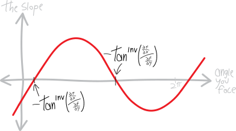
Note that tangent repeats every \(\pi\) (every \(180^{\circ}\)), so in a full \(2\pi\) revolution (a full \(360^{\circ}\)), there are TWO values that work here—i.e., two directions we can point in to make the surface flat/the slope zero! \[ \theta_\text{flat} = -\tan^\text{inv}\left(\frac{\,\, \frac{\partial f}{\partial x}\,\,}{\frac{\partial f}{\partial y} } \right)\quad\substack{\text{two solutions}\\\text{between $0$ and $2\pi$!}}\]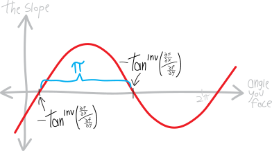
We’ve already seen that intuitively—every point has a contour line in both directions; there are two directions you can turn in to make the surface flat. This is the math behind that!And if you prefer using the \(f_x\) and \(f_y\) notation for partial derivatives, which avoids the aesthetic ugliness of these fractions of fractions, you can write this as: \[ \theta_\text{flat} = -\tan^\text{inv}\left(\frac{f_x}{f_y} \right)\]
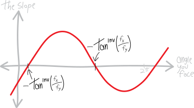
Yay!How about the angle that makes the slope the biggest? Can we find that??
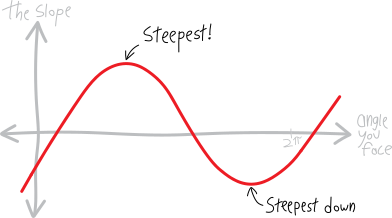
We can just use 1VC!!! We have a function for the slope—so we can just take its derivative, set the derivative equal to zero, and solve for the angle!!! To take the derivative, we have: \[\begin{align*} \text{slope}'\left(\theta\right) &= \left(\, \frac{\partial f}{\partial x}\cos\theta + \frac{\partial f}{\partial y}\sin\theta \right)' \\ \\ &= -\frac{\partial f}{\partial x}\sin\theta + \frac{\partial f}{\partial y}\cos\theta \end{align*}\] So then we need to find what angle makes this derivative zero: \[\text{slope}'\left(\theta_\text{steepest}\right) = 0\] Which will be: \[ -\frac{\partial f}{\partial x}\sin\theta_\text{steepest} + \frac{\partial f}{\partial y}\cos\theta_\text{steepest} = 0 \] Of course, note that setting the derivative equal to zero won’t necessarily give us the biggest slope; it’ll also give us the smallest slope. Derivatives being zero give us maxima AND minima (also potentially cubicky indecisive points). But that’s fine; we can deal with that later. So, solving this for theta, we can first move things around: \[ \frac{\partial f}{\partial y}\cos\theta_\text{steepest} = \frac{\partial f}{\partial x}\sin\theta_\text{steepest} \] And then put the partials on one side and the triggies on the other side: \[ \frac{\,\, \frac{\partial f}{\partial y}\,\,}{\frac{\partial f}{\partial x}} = \frac{\sin\theta_\text{steepest}}{\cos\theta_\text{steepest}} \] That’s just a tangent: \[ \frac{\,\, \frac{\partial f}{\partial y}\,\,}{\frac{\partial f}{\partial x}} = \tan\theta_\text{steepest} \] Which we can invert: \[ \tan^\text{inv}\left( \frac{\,\, \frac{\partial f}{\partial y}\,\,}{\frac{\partial f}{\partial x}} \right)= \theta_\text{steepest} \] Or: \[\theta_\text{steepest} = \tan^\text{inv}\left( \frac{\,\, \frac{\partial f}{\partial y}\,\,}{\frac{\partial f}{\partial x}} \right)\] Yay!!! And like before, tangent repeats every \(\pi\) (every \(180^\circ\)), so there are two solutions here in a full \(2\pi\) a.k.a \(360^\circ\) revolution of the circle. In other words, there are two points where the ``slope’’ graph is flat—one of which corresponds to the maximum slope and one of which corresponds to the minimum slope. (A derivative being zero doesn’t distinguish between the max and the min.) \[ \theta_\text{steepest} = \tan^\text{inv}\left(\frac{\,\, \frac{\partial f}{\partial y}\,\,}{\frac{\partial f}{\partial x} } \right)\quad\substack{\text{two solutions}\\\text{between $0$ and $2\pi$!}}\] So we have: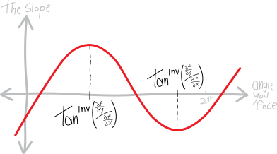
These are both \(180^\circ\), i.e. \(\pi\) apart: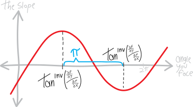
And again, maybe it’s more clear to represent the partials as \(f_x\) and \(f_y\):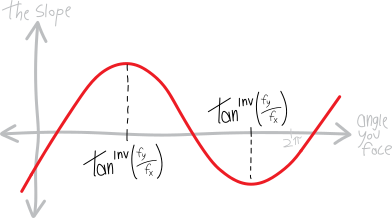
In summary: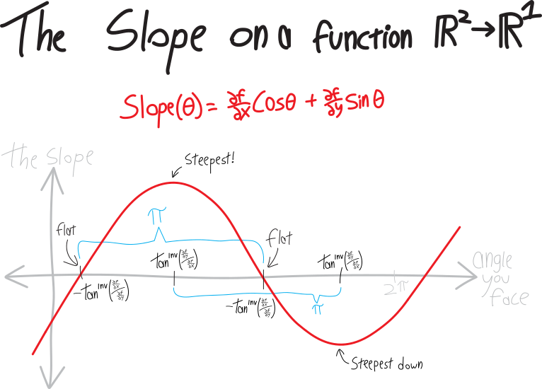
so in a full \(2\pi\) revolution (a full \(360^\circ\)), there are TWO values that work here—i.e., two directions we can point in to make the surface flat/the slope zero!
we could also do all of this in terms of direction/unit vectors instead of angles. that’ll generalize better to higher dimensions!